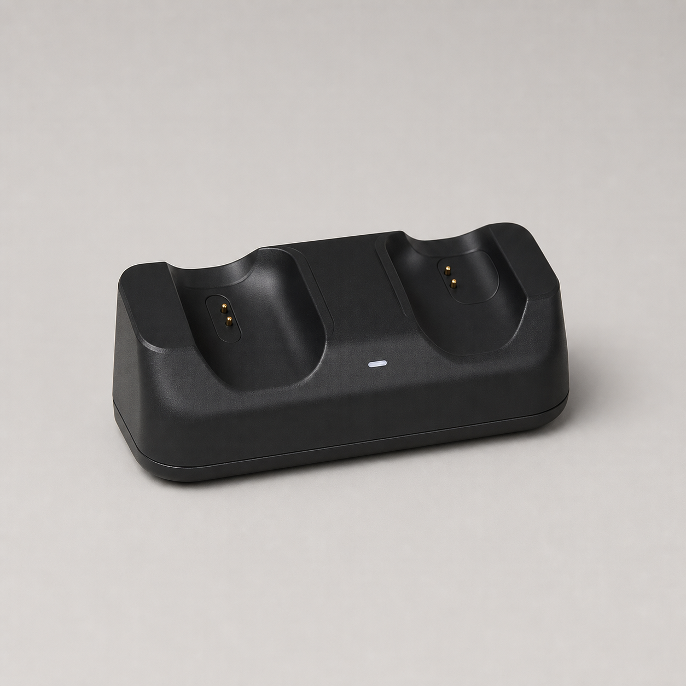

<style>
  .guide-slide { --ink:#121212; --muted:#6f6f6f; --paper:#f5f2ec; --line:#d8d3ca; --red:#ef233c; --blue:#2563eb; }
  .guide-slide .slide-inner { padding: clamp(28px, 4vh, 54px) clamp(38px, 4.7vw, 78px); }
  .guide-slide .canvas-card { overflow: hidden; }
  .g-kicker { color: var(--red); font-size: clamp(12px, 1.2vw, 18px); font-weight: 800; letter-spacing: .18em; text-transform: uppercase; }
  .g-title { color: var(--ink); font-size: clamp(38px, 5.5vw, 82px); font-weight: 900; letter-spacing: -.055em; line-height: .98; margin: 12px 0 0; max-width: 1050px; }
  .g-title.small { font-size: clamp(34px, 4.5vw, 68px); }
  .g-lead { color: var(--muted); font-size: clamp(17px, 1.75vw, 27px); line-height: 1.48; margin: 22px 0 0; max-width: 980px; }
  .g-grid-2 { display:grid; grid-template-columns:repeat(2,minmax(0,1fr)); gap:clamp(18px,2.2vw,34px); margin-top:clamp(26px,4vh,50px); }
  .g-grid-3 { display:grid; grid-template-columns:repeat(3,minmax(0,1fr)); gap:clamp(14px,1.7vw,26px); margin-top:clamp(24px,3.4vh,44px); }
  .g-grid-4 { display:grid; grid-template-columns:repeat(4,minmax(0,1fr)); gap:clamp(12px,1.5vw,22px); margin-top:clamp(24px,3.4vh,42px); }
  .g-card { background:#fff; border:1px solid var(--line); border-radius:20px; padding:clamp(18px,2.1vw,30px); min-width:0; }
  .g-card.dark { background:#141414; border-color:#141414; color:#fff; }
  .g-card.red { background:var(--red); border-color:var(--red); color:#fff; }
  .g-card h3 { font-size:clamp(20px,2vw,31px); letter-spacing:-.03em; line-height:1.1; margin:10px 0 12px; }
  .g-card p, .g-card li { color:var(--muted); font-size:clamp(14px,1.3vw,20px); line-height:1.45; }
  .g-card.dark p, .g-card.dark li, .g-card.red p, .g-card.red li { color:rgba(255,255,255,.78); }
  .g-num { display:inline-grid; place-items:center; width:36px; height:36px; border-radius:50%; background:var(--ink); color:#fff; font-weight:900; }
  .g-card.red .g-num { background:#fff; color:var(--red); }
  .g-card ul { margin:12px 0 0; padding-left:1.1em; }
  .g-card li + li { margin-top:6px; }
  .g-code { background:#111; color:#f7f7f7; border-radius:18px; padding:20px 24px; font:600 clamp(13px,1.25vw,19px)/1.6 ui-monospace,SFMono-Regular,Menlo,monospace; white-space:pre-wrap; }
  .g-path { color:var(--blue); font-family:ui-monospace,SFMono-Regular,Menlo,monospace; font-size:.88em; overflow-wrap:anywhere; }
  .g-strip { display:flex; gap:12px; flex-wrap:wrap; margin-top:24px; }
    .g-pill { border:1px solid var(--line); border-radius:999px; padding:9px 14px; font-size:clamp(12px,1.15vw,17px); font-weight:750; color:#111; background:#fff; }
  .g-arrow { color:var(--red); font-size:clamp(24px,3vw,44px); font-weight:900; align-self:center; }
  .g-flow { display:grid; grid-template-columns:1fr auto 1fr auto 1fr; gap:18px; margin-top:48px; align-items:stretch; }
  .g-flow .g-card { display:flex; flex-direction:column; justify-content:space-between; }
  .g-note { border-left:7px solid var(--red); padding:14px 20px; margin-top:28px; background:#fff; font-size:clamp(15px,1.35vw,20px); line-height:1.45; }
  .g-check { display:grid; grid-template-columns:repeat(3,minmax(0,1fr)); gap:14px; margin-top:34px; }
  .g-check div { background:#fff; border-bottom:3px solid var(--ink); padding:20px; font-size:clamp(15px,1.3vw,20px); font-weight:750; }
  .g-check b { color:var(--red); display:block; font-size:1.7em; margin-bottom:7px; }
  .g-statement { height:100%; display:flex; flex-direction:column; justify-content:center; align-items:center; text-align:center; background:#101010; color:#fff; padding:8vh 8vw; }
  .g-statement h2 { font-size:clamp(52px,7.6vw,112px); line-height:.95; letter-spacing:-.065em; max-width:1200px; margin:0; }
  .g-statement p { color:#bdbdbd; font-size:clamp(18px,1.8vw,28px); margin-top:28px; max-width:840px; line-height:1.45; }
  .g-red { color:var(--red); }
  .g-photo-grid { display:grid; grid-template-columns:1.45fr .72fr; gap:18px; height:calc(100% - 150px); margin-top:28px; }
  .g-photo-main, .g-photo-mini { border-radius:22px; overflow:hidden; background:#ddd; position:relative; }
  .g-photo-main img, .g-photo-mini img { width:100%; height:100%; object-fit:cover; display:block; }
  .g-photo-side { display:grid; grid-template-rows:repeat(2,minmax(0,1fr)); gap:18px; }
  .g-caption { position:absolute; left:20px; bottom:18px; padding:8px 12px; border-radius:999px; background:rgba(0,0,0,.78); color:#fff; font-size:14px; font-weight:800; }
  .g-prompt { background:#fff; border-left:5px solid var(--red); padding:18px 20px; min-height:132px; }
  .g-prompt h3 { margin:0 0 7px; font-size:clamp(17px,1.55vw,24px); }
  .g-prompt p { color:#555; font-size:clamp(12px,1.05vw,16px); line-height:1.4; margin:0; }
  .g-footer { position:absolute; left:clamp(38px,4.7vw,78px); right:clamp(38px,4.7vw,78px); bottom:24px; display:flex; justify-content:space-between; color:#8b8b8b; font-size:12px; letter-spacing:.08em; text-transform:uppercase; }
  .g-cover { background:#0b0b0c; color:#fff; height:100%; display:grid; grid-template-columns:1.1fr .9fr; }
  .g-cover-copy { padding:clamp(44px,6vw,96px); display:flex; flex-direction:column; justify-content:center; }
  .g-cover-copy .g-title { color:#fff; max-width:880px; }
  .g-cover-copy .g-lead { color:#b7b7b7; }
  .g-cover-visual { position:relative; overflow:hidden; }
  .g-cover-visual img { width:100%; height:100%; object-fit:cover; filter:saturate(.9) contrast(1.06); }
  .g-cover-visual:after { content:""; position:absolute; inset:0; background:linear-gradient(90deg,#0b0b0c 0%,transparent 38%); }
  .g-close { display:flex; align-items:flex-end; justify-content:space-between; height:100%; background:#ef233c; padding:clamp(52px,7vw,110px); color:#fff; }
  .g-close h2 { font-size:clamp(62px,8.5vw,126px); letter-spacing:-.07em; line-height:.88; margin:0; max-width:1050px; }
  .g-close ol { margin:0; padding:0; list-style:none; width:min(420px,32vw); counter-reset:step; }
  .g-close li { counter-increment:step; border-top:1px solid rgba(255,255,255,.55); padding:16px 0; font-size:clamp(15px,1.3vw,20px); }
  .g-close li:before { content:"0" counter(step); font-weight:900; margin-right:16px; }
  @media (max-width:900px) { .g-grid-4{grid-template-columns:repeat(2,1fr)} .g-cover{grid-template-columns:1fr} .g-cover-visual{display:none} }
</style>

<section class="slide guide-slide" data-layout="S01" aria-label="封面">
  <div class="canvas-card g-cover">
    <div class="g-cover-copy">
      <div class="g-kicker">Open-source storefront starter kits</div>
              <h1 class="g-title">两套免费<br>商店模板<span class="g-red">.</span></h1>
      <p class="g-lead">Shopify OS 2.0 主题与独立 Next.js 商店，从安装、替换素材到发布上线的一份完整演示。</p>
      <div class="g-strip"><span class="g-pill">15 页演示</span><span class="g-pill">可离线打开</span><span class="g-pill">含图片生成教程</span></div>
    </div>
    <div class="g-cover-visual"></div>
  </div>
</section>

<section class="slide guide-slide" data-layout="S08" aria-label="选择模板">
  <div class="slide-inner">
    <div class="g-kicker">01 · Choose your base</div>
    <h2 class="g-title small">先选对底座，再开始装修<span class="g-red">.</span></h2>
    <div class="g-grid-2">
      <article class="g-card dark"><span class="g-num">A</span><h3>Shopify 免费主题</h3><p>适合希望直接使用 Shopify 后台、订单、支付、库存和应用生态的店主。</p><ul><li>Dawn / Online Store 2.0</li><li>Theme Editor 可视化编辑</li><li>原生商品、购物车与结账</li></ul></article>
      <article class="g-card red"><span class="g-num">B</span><h3>独立 Next.js 商店</h3><p>适合开发者、静态展示站、品牌官网原型，或需要完全掌控前端体验的团队。</p><ul><li>本地商品目录与购物车</li><li>可部署到任意 Node 平台</li><li>生产支付需自行接入</li></ul></article>
    </div>
    <div class="g-note"><b>快速判断：</b>要“马上卖货”选 Shopify；要“完全自主开发”选 Next.js。</div>
  </div>
</section>

<section class="slide guide-slide" data-layout="S17" aria-label="整体架构">
  <div class="slide-inner">
    <div class="g-kicker">02 · Shared commerce flow</div>
    <h2 class="g-title small">两套模板，共用同一条成交路径<span class="g-red">.</span></h2>
    <div class="g-flow">
      <article class="g-card"><span class="g-num">1</span><h3>内容与信任</h3><p>Hero、品牌说明、政策、指南与真实商品图片。</p></article><div class="g-arrow">→</div>
      <article class="g-card red"><span class="g-num">2</span><h3>商品与选择</h3><p>价格、规格、库存、图片、配送信息都要清楚。</p></article><div class="g-arrow">→</div>
      <article class="g-card dark"><span class="g-num">3</span><h3>购物车与结账</h3><p>Shopify 原生完成；独立站需要配置生产支付。</p></article>
    </div>
    <div class="g-strip"><span class="g-pill">发现商品</span><span class="g-pill">理解差异</span><span class="g-pill">建立信任</span><span class="g-pill">完成购买</span></div>
  </div>
</section>

<section class="slide guide-slide" data-layout="S11" aria-label="安装 Shopify 主题">
  <div class="slide-inner">
    <div class="g-kicker">03 · Shopify setup</div>
    <h2 class="g-title small">安装 Shopify 主题，四步完成<span class="g-red">.</span></h2>
    <div class="g-grid-4">
      <article class="g-card"><span class="g-num">1</span><h3>准备 ZIP</h3><p>ZIP 根目录必须直接包含 <b>assets / config / layout / sections / snippets / templates</b>。</p></article>
      <article class="g-card"><span class="g-num">2</span><h3>上传主题</h3><p>Online Store → Themes → Add theme → Upload zip file。</p></article>
      <article class="g-card"><span class="g-num">3</span><h3>编辑预览</h3><p>先创建副本或预览主题，替换品牌、导航、商品与政策。</p></article>
      <article class="g-card red"><span class="g-num">4</span><h3>测试发布</h3><p>手机、桌面、购物车、结账、表单和政策链接全部通过后再发布。</p></article>
    </div>
    <div class="g-code" style="margin-top:24px">shopify theme dev --store=your-store.myshopify.com
shopify theme push --unpublished</div>
  </div>
</section>

<section class="slide guide-slide" data-layout="S19" aria-label="Shopify 自定义区域">
  <div class="slide-inner">
    <div class="g-kicker">04 · Customize the theme</div>
    <h2 class="g-title small">优先改四个高影响区域<span class="g-red">.</span></h2>
    <div class="g-grid-2">
      <article class="g-card dark"><h3>① 首屏与品牌</h3><p>Logo、Hero 标题、主按钮、主视觉。第一屏只回答“卖什么、适合谁、下一步是什么”。</p></article>
      <article class="g-card"><h3>② 商品与规格</h3><p>在 Products 后台维护标题、描述、变体、库存、媒体和 SEO。不要把真实库存写死在主题代码里。</p></article>
      <article class="g-card"><h3>③ 导航与帮助</h3><p>Header 菜单必须语义正确：Shop、User Guide、Support、Policies 各自到正确页面。</p></article>
      <article class="g-card red"><h3>④ 政策与结账</h3><p>配送时效、运费门槛、退货、隐私、条款必须与 Shopify 后台实际配置一致。</p></article>
    </div>
    <div class="g-note">第三方应用块（Inbox、Shop、评论、弹窗）不会随开源主题自动安装，需要在目标店铺重新启用。</div>
  </div>
</section>

<section class="slide guide-slide" data-layout="S04" aria-label="Shopify 发布检查">
  <div class="slide-inner">
    <div class="g-kicker">05 · Before publishing</div>
    <h2 class="g-title small">发布不是点击按钮，是通过一轮验收<span class="g-red">.</span></h2>
    <div class="g-check">
      <div><b>01</b>导航链接正确</div><div><b>02</b>变体与库存可选</div><div><b>03</b>购物车可增删</div>
      <div><b>04</b>运费政策一致</div><div><b>05</b>移动端无遮挡</div><div><b>06</b>结账真实可用</div>
    </div>
    <div class="g-grid-2" style="margin-top:22px">
      <div class="g-code">shopify theme check
shopify theme push --unpublished</div>
      <div class="g-card"><h3>实机测试</h3><p>至少覆盖 iPhone Safari、Android Chrome、Windows Chrome 和 Mac Safari；用访客身份走完“找商品 → 选规格 → 加购 → 结账”。</p></div>
    </div>
  </div>
</section>

<section class="slide guide-slide" data-layout="S11" aria-label="运行独立商店">
  <div class="slide-inner">
    <div class="g-kicker">06 · Next.js setup</div>
    <h2 class="g-title small">独立商店，本地三分钟跑起来<span class="g-red">.</span></h2>
    <div class="g-grid-2">
      <div class="g-code">npm install
cp .env.example .env.local
npm run dev

# 发布前
npm run check</div>
      <article class="g-card dark"><h3>开发环境</h3><p>浏览器打开 <span class="g-path">http://localhost:3000</span>。先验证首页、商品详情、购物车、政策页，再接入真实服务。</p><ul><li>Node.js LTS</li><li>本地商品数据</li><li>可部署到 Vercel 或其他 Node 平台</li></ul></article>
    </div>
    <div class="g-note"><b>注意：</b>演示结账只用于展示交互，不等于真实支付系统。</div>
  </div>
</section>

<section class="slide guide-slide" data-layout="S05" aria-label="独立商店文件地图">
  <div class="slide-inner">
    <div class="g-kicker">07 · File map</div>
    <h2 class="g-title small">改内容时，只需要记住这五处<span class="g-red">.</span></h2>
    <div class="g-grid-2">
      <article class="g-card"><h3>品牌与站点信息</h3><p class="g-path">src/lib/site.ts</p><p>站名、描述、导航、社交链接和站点 URL。</p></article>
      <article class="g-card"><h3>商品数据</h3><p class="g-path">src/data/products.ts</p><p>标题、价格、规格、库存、图片与商品说明。</p></article>
      <article class="g-card"><h3>商品图片</h3><p class="g-path">public/products/</p><p>使用统一比例，文件名稳定，更新数据中的路径。</p></article>
      <article class="g-card"><h3>政策页面</h3><p class="g-path">src/app/policies/</p><p>配送、退货、隐私与服务条款。</p></article>
    </div>
    <div class="g-strip"><span class="g-pill">.env.local</span><span class="g-pill">npm run typecheck</span><span class="g-pill">npm run lint</span><span class="g-pill">npm run build</span></div>
  </div>
</section>

<section class="slide guide-slide" data-layout="S08" aria-label="演示与生产边界">
  <div class="slide-inner">
    <div class="g-kicker">08 · Demo vs production</div>
    <h2 class="g-title small">“能演示”与“能收款”是两件事<span class="g-red">.</span></h2>
    <div class="g-grid-2">
      <article class="g-card"><h3>模板已经包含</h3><ul><li>商品列表与详情</li><li>本地购物车</li><li>响应式页面</li><li>政策页、sitemap、robots、JSON-LD</li></ul></article>
      <article class="g-card red"><h3>生产环境仍需接入</h3><ul><li>支付服务与服务器端密钥</li><li>订单、库存与客户数据库</li><li>税费、运费与退款流程</li><li>邮件通知与反欺诈</li></ul></article>
    </div>
    <div class="g-note">多商品真实结账应在服务端生成订单与支付会话，不要把价格或密钥信任给浏览器。</div>
  </div>
</section>

<section class="slide guide-slide" data-layout="S14" aria-label="图片生成流程">
  <div class="slide-inner">
    <div class="g-kicker">09 · Image workflow</div>
    <h2 class="g-title small">用 Image 统一视觉，不重造商品<span class="g-red">.</span></h2>
    <div class="g-flow">
      <article class="g-card"><span class="g-num">1</span><h3>选真实参考图</h3><p>正面、侧面、接口、包装各一张，优先高分辨率。</p></article><div class="g-arrow">→</div>
      <article class="g-card red"><span class="g-num">2</span><h3>锁定产品事实</h3><p>保持形状、按钮、端口、比例、材质和标签位置。</p></article><div class="g-arrow">→</div>
      <article class="g-card dark"><span class="g-num">3</span><h3>只改视觉环境</h3><p>调整背景、灯光、阴影、构图和裁切，不添加不存在的功能。</p></article>
    </div>
    <div class="g-note"><b>推荐比例：</b>商品主图 1:1；集合卡片 4:5 或 1:1；桌面 Hero 16:9；移动 Hero 4:5。</div>
  </div>
</section>

<section class="slide guide-slide" data-layout="S03" aria-label="图片真实性原则">
  <div class="canvas-card g-statement">
    <div class="g-kicker">Product truth first</div>
    <h2>保留实物<span class="g-red">.</span><br>再优化画面<span class="g-red">.</span></h2>
    <p>AI 图片最危险的错误不是“不够高级”，而是多了端口、少了按钮、改了比例，最终让顾客收到的商品与页面不一致。</p>
  </div>
</section>

<section class="slide guide-slide" data-layout="S16" aria-label="图片提示词模板">
  <div class="slide-inner">
    <div class="g-kicker">10 · Prompt library</div>
    <h2 class="g-title small">六个可复用的提示词模块<span class="g-red">.</span></h2>
    <div class="g-grid-3">
      <article class="g-prompt"><h3>身份锁定</h3><p>Use the attached product photos as strict visual references. Preserve exact geometry, controls, ports, labels, proportions and materials.</p></article>
      <article class="g-prompt"><h3>背景统一</h3><p>Place the unchanged product on a warm off-white studio surface with soft shadows and subtle premium texture.</p></article>
      <article class="g-prompt"><h3>桌面 Hero</h3><p>16:9 wide composition, dark navy studio lighting, product on the right, clean negative space on the left for headline and CTA.</p></article>
      <article class="g-prompt"><h3>集合主图</h3><p>Square 1:1 catalog image, centered product, 12% breathing room, eye-level camera, soft grounded shadow.</p></article>
      <article class="g-prompt"><h3>细节特写</h3><p>Macro close-up of the real port/button/texture shown in the reference, no redesign, no extra controls.</p></article>
      <article class="g-prompt"><h3>负面约束</h3><p>No invented ports, buttons, logos, text, accessories, impossible reflections, warped edges or altered product proportions.</p></article>
    </div>
  </div>
</section>

<section class="slide guide-slide" data-layout="S22" aria-label="生成图应用示例">
  <div class="slide-inner">
    <div class="g-kicker">11 · Public-safe visual kit</div>
    <h2 class="g-title small">同一套光线，覆盖 Hero 与商品卡<span class="g-red">.</span></h2>
    <div class="g-photo-grid">
      <figure class="g-photo-main"><figcaption class="g-caption">Hero · 16:9</figcaption></figure>
      <div class="g-photo-side">
        <figure class="g-photo-mini"><figcaption class="g-caption">Product · 1:1</figcaption></figure>
        <figure class="g-photo-mini"><figcaption class="g-caption">Accessory · 1:1</figcaption></figure>
      </div>
    </div>
  </div>
</section>

<section class="slide guide-slide" data-layout="S04" aria-label="图片与版权检查">
  <div class="slide-inner">
    <div class="g-kicker">12 · Image and legal QA</div>
    <h2 class="g-title small">上传前，逐张通过六项检查<span class="g-red">.</span></h2>
    <div class="g-check">
      <div><b>01</b>端口与按钮一致</div><div><b>02</b>品牌文字无错字</div><div><b>03</b>尺寸比例无变形</div>
      <div><b>04</b>无虚构配件功能</div><div><b>05</b>拥有分发与商用权</div><div><b>06</b>移动裁切仍清楚</div>
    </div>
    <div class="g-grid-2" style="margin-top:22px">
      <article class="g-card"><h3>Shopify 替换</h3><p>Theme Editor 替换 Hero；Products → Media 替换商品图。保留正确 alt text 与变体图片映射。</p></article>
      <article class="g-card dark"><h3>Next.js 替换</h3><p>图片放入 <span class="g-path">public/hero</span> 或 <span class="g-path">public/products</span>，再更新 <span class="g-path">src/data/products.ts</span>。</p></article>
    </div>
  </div>
</section>

<section class="slide guide-slide" data-layout="S09" aria-label="结束页">
  <div class="canvas-card g-close">
    <div><div class="g-kicker" style="color:#fff">Ready to publish</div><h2>替换<span style="opacity:.55">.</span><br>测试<span style="opacity:.55">.</span><br>再上线<span style="opacity:.55">.</span></h2></div>
    <ol><li>先把示例品牌、文本和图片替换干净</li><li>用真实顾客路径完成桌面与移动验收</li><li>先发布预览，再切换到正式环境</li></ol>
  </div>
</section>
